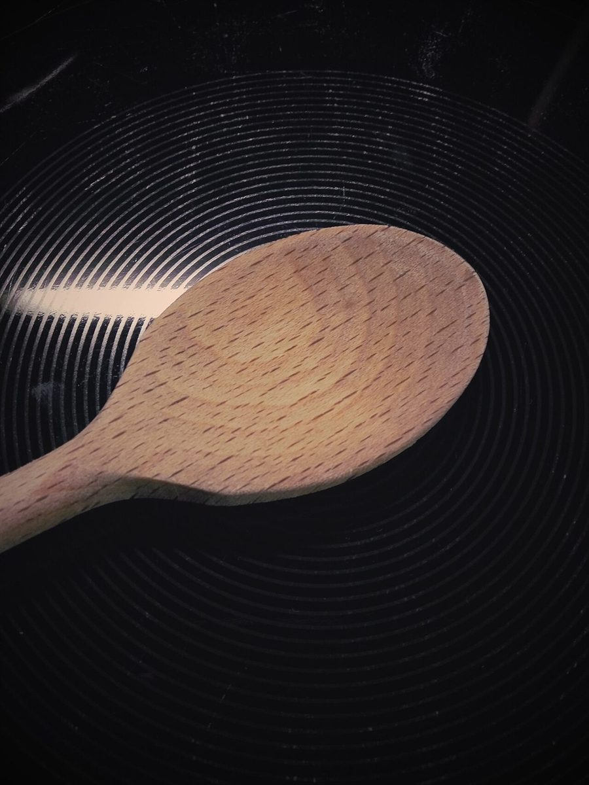

パルファン

ベーカリー / 奈良県橿原市
奈良県橿原市のベーカリー「パルファン」のご案内ページです。営業時間やメニューなど、詳しいことは準備中。まずはInstagramをのぞいてみてください。
MODE 01 / ピンク
ペンライトの色替えボタン
お店の由来は分かりません。制作側は「パルファン」の「ファン」という音から、コンサート会場で色を替えながら振られるペンライトを連想しました。そこでこのサイトは、暗い客席に灯る5色の光に見立て、ページごとに色が切り替わる作りにしています。お店の理念・由来とは無関係の、制作側の連想です。
上の「色を替える」ボタンを押すと、このページの色が順番に切り替わります。
暗がりに灯る焼き色(イメージ)
光を当てると、艶が立つ。
写真は国外・撮影地不明のフリー素材で、お店の商品ではありません。



ご案内
お店のこと(確認できたものだけ)
| 所在地 | 〒634-0043 奈良県橿原市五条野町368-1 |
|---|---|
| 電話 | 0744-38-9227 |
| 営業時間 | 準備中 |
| 定休日 | 準備中 |
| ご予約 | 準備中 |
| 駐車場 | 準備中 |
| SNS | Instagram @parfum_kashihara |